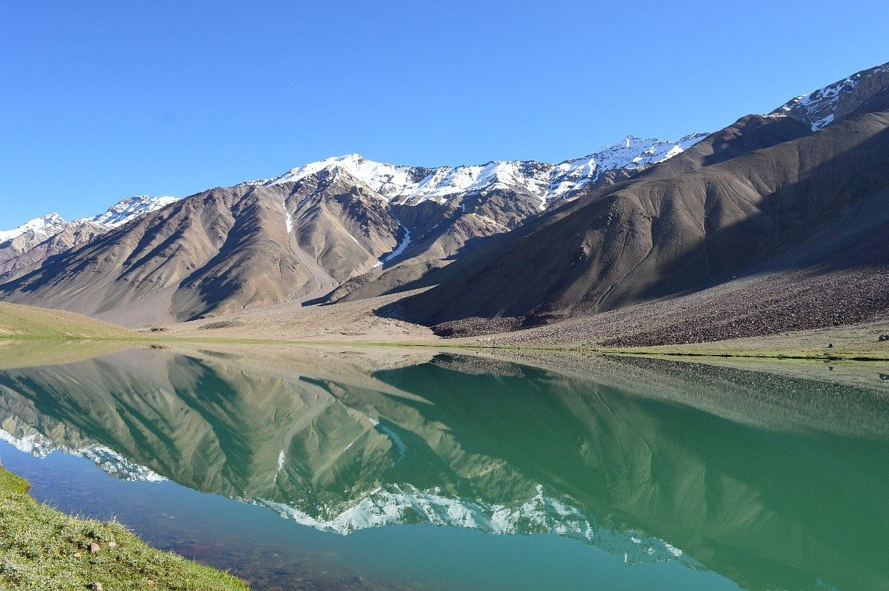

CHANDRATAL
Chandratal Lake, also known as the "Moon Lake," is a stunning high-altitude lake in the Lahaul and Spiti region of Himachal Pradesh, India. Situated at an elevation of about 4,300 meters (14,100 feet), it is known for its crescent shape, crystal-clear blue waters, and breathtaking views of the surrounding mountains. It is a popular destination for trekkers and campers.
Key Features:
Location: Lahaul and Spiti district, Himachal Pradesh, India, at an altitude of 4,300 meters.
Crescent Shape: The lake is crescent-shaped, which is the origin of its name "Moon Lake" (Chandratal).
Surroundings: Surrounded by snow-capped mountains and grassy plains, offering a tranquil and beautiful landscape.
Source of Chandra River: Chandratal is the source of the Chandra River.
Popular Destination: A popular spot for tourists, trekkers, and campers due to its scenic beauty and adventure opportunities.
Mythical Significance: Associated with various myths and legends, adding to its mystique.
Stargazing: The lake is a prime location for stargazing due to its clear night skies and reflections of the Milky Way.